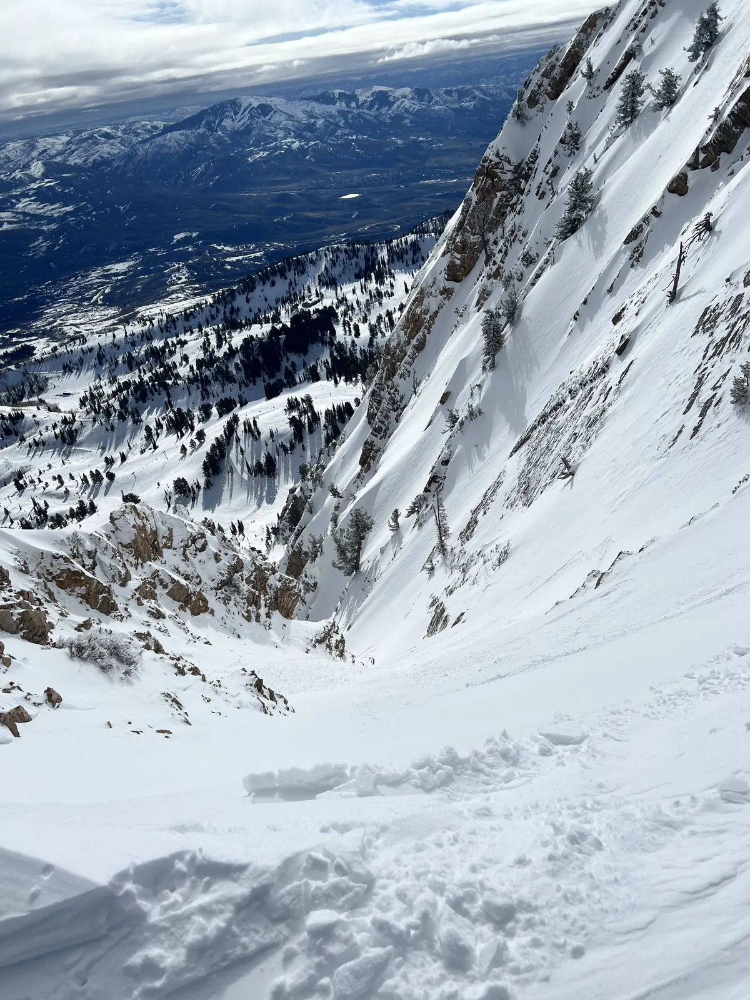

Freeride skiing
Competing with the Snowbasin Ski Team’s freeride program, plus tricks and freestyle whenever I can.
I like skiing, lacrosse, computers, and building things I don’t completely know how to build yet.

I’m 16 and live in Bountiful, Utah, with the Wasatch right out the back door. I’m a senior at Bountiful High School. I skipped freshman year, so I’ll graduate at 17. Part of every school day I’m at the Davis Catalyst Center, studying cybersecurity, web development and AI engineering.
In the winter I compete in freeride with the Snowbasin Ski Team. Snowbasin is my home mountain, and this is my second season with the team. In the spring I play lacrosse for Bountiful, mostly at close defense and LSM, and I’ve been a JV captain and starter.
The rest of the time I’m mountain biking, climbing, hiking or lifting. When I’m inside, I’m usually running local AI models or working on whatever project I’m currently way too deep into.
Competing with the Snowbasin Ski Team’s freeride program, plus tricks and freestyle whenever I can.
Long pole for Bountiful, at close defense and LSM. JV captain and starter, plus practices, lifting and extra sessions in the fall.
Local models, GPU servers and AI agents. I like running the infrastructure myself, not just using a chatbot.
Still figuring it out, but here’s the rough idea.
Bountiful High, Catalyst, my second freeride season at Snowbasin, and lacrosse in the spring.
Time to build real AI and software projects, try some entrepreneurship, and leave plenty of room for skiing.
Not locked in yet. I want to figure out what I actually want to work on first.
Earned through school. You can verify each one on Credly.